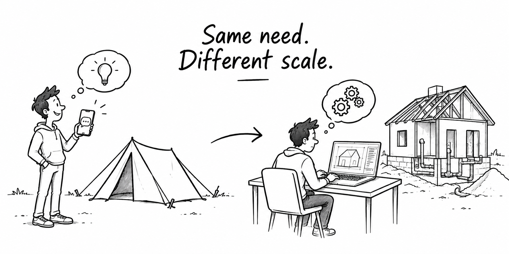

What happened when I wanted to move my app away from Replit — and discovered what was under the hood.

When I built my Travel Planner app, my main question was simple:
Could I turn an idea into a working application with AI? The answer was YES.
Using Replit, I could describe what I wanted, generate code, test it and progressively build a functional MVP.
It felt as simple as: “I have an idea. Let's build it.”
But when I wanted more control over the application, I decided to move it away from Replit and host it myself.
I thought the migration would mostly be about moving the code. Instead, it made me discover everything that was happening under the hood.
The migration forced me to look behind the application.
I suddenly had to understand:
I realized that an application isn't one thing. It's a collection of components that need to work together.
That's when the tent became a house in my mind.
A tent is enough to get started. You don't need to understand much about what's underneath.
But when you want to build a house, the foundations matter.
The product stayed the same. The migration simply forced me to understand how it was built and what it needed to run on my own infrastructure.
AI made it possible for me to build without understanding everything underneath.
I started with a simple goal: move my application to my own infrastructure.
Along the way, I discovered the architecture that made the application work.
The experience made me realize that building fast is only part of the challenge. Building something that can be maintained, understood and evolved over time is another.
AI can help me build faster.
Understanding architecture helps me build for the long term.
Same need. Different scale.
Project started: August 2026